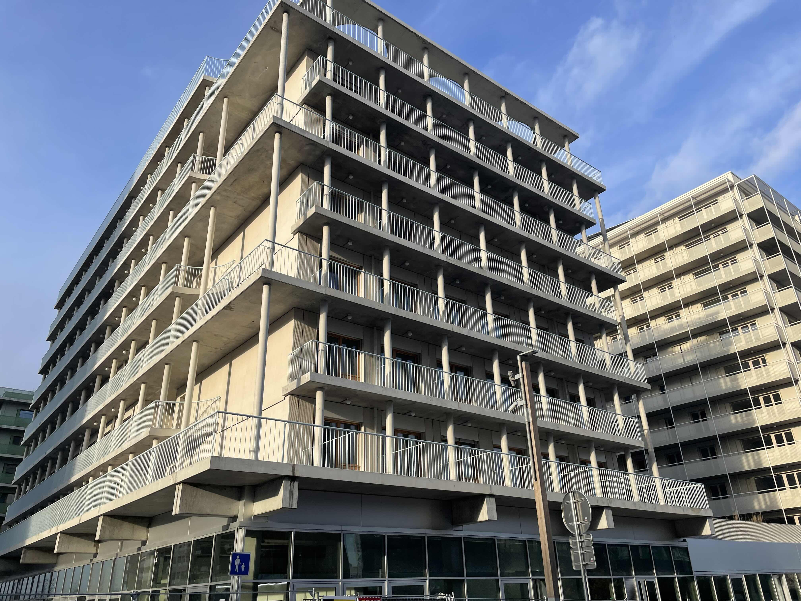
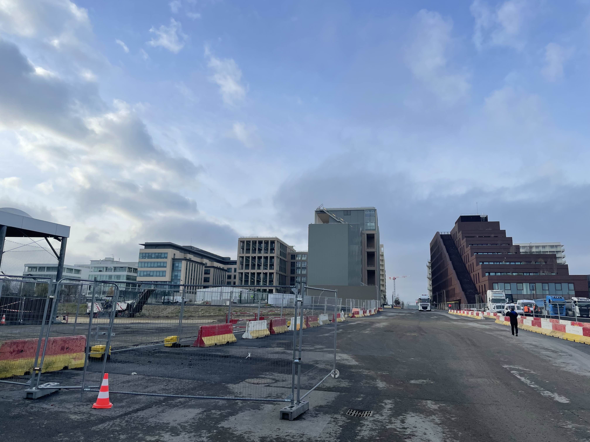
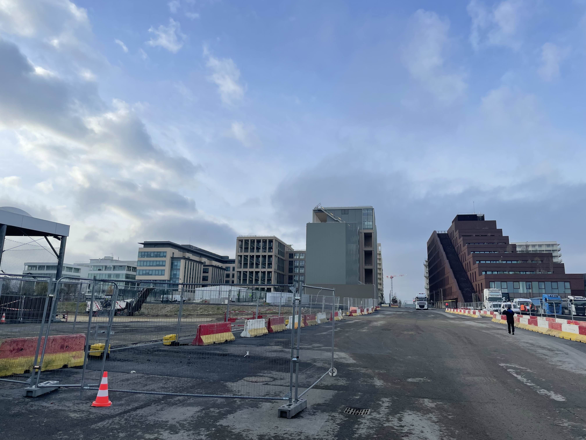
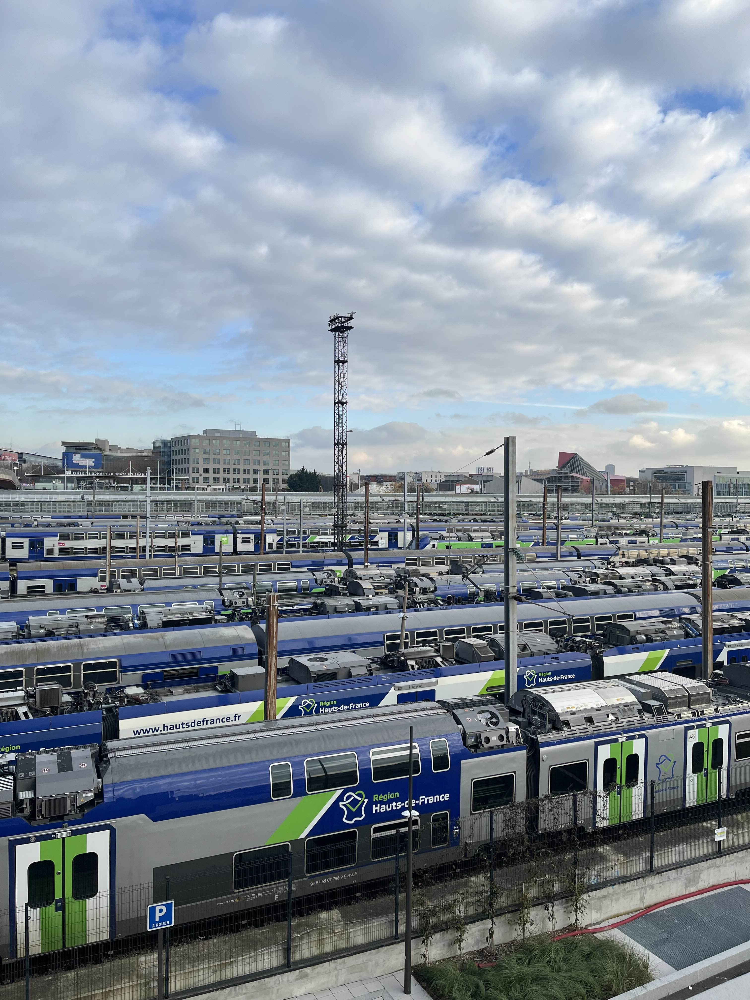
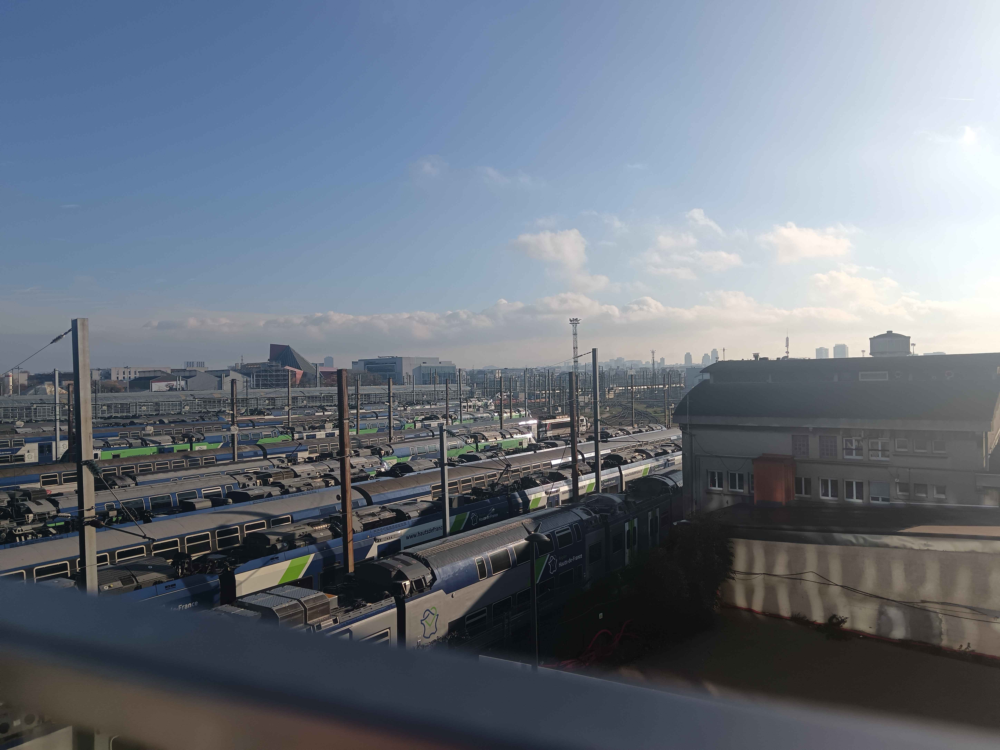
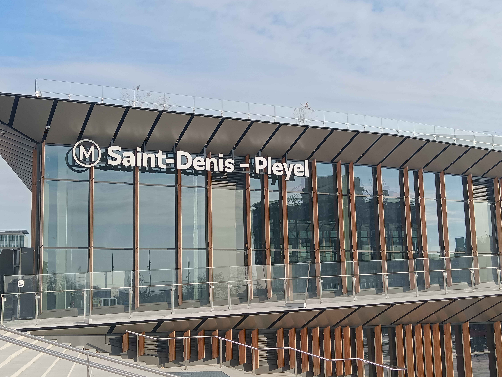
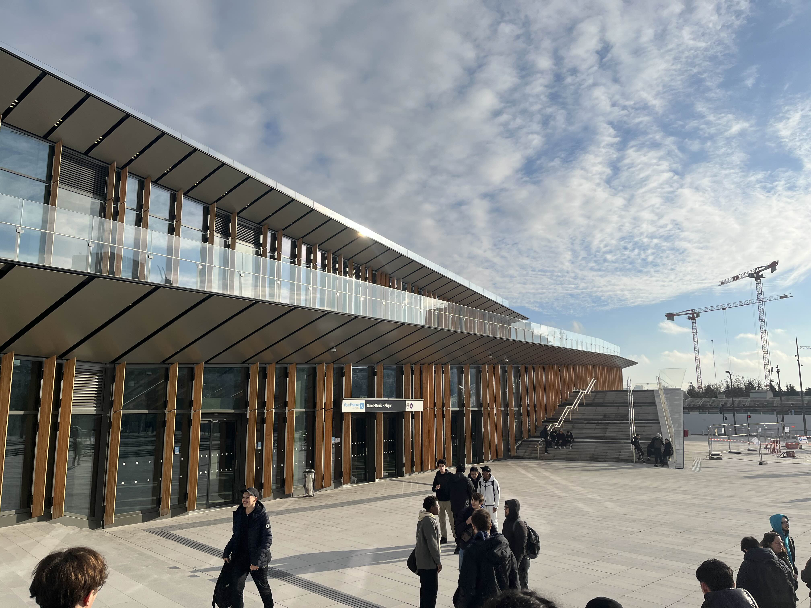
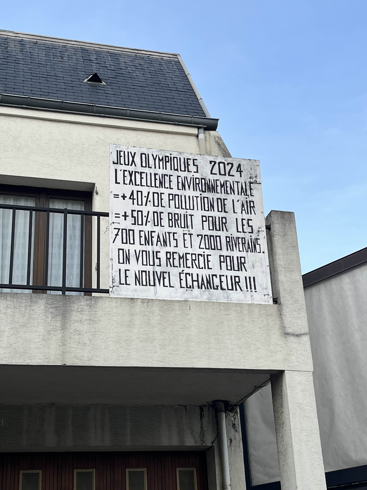
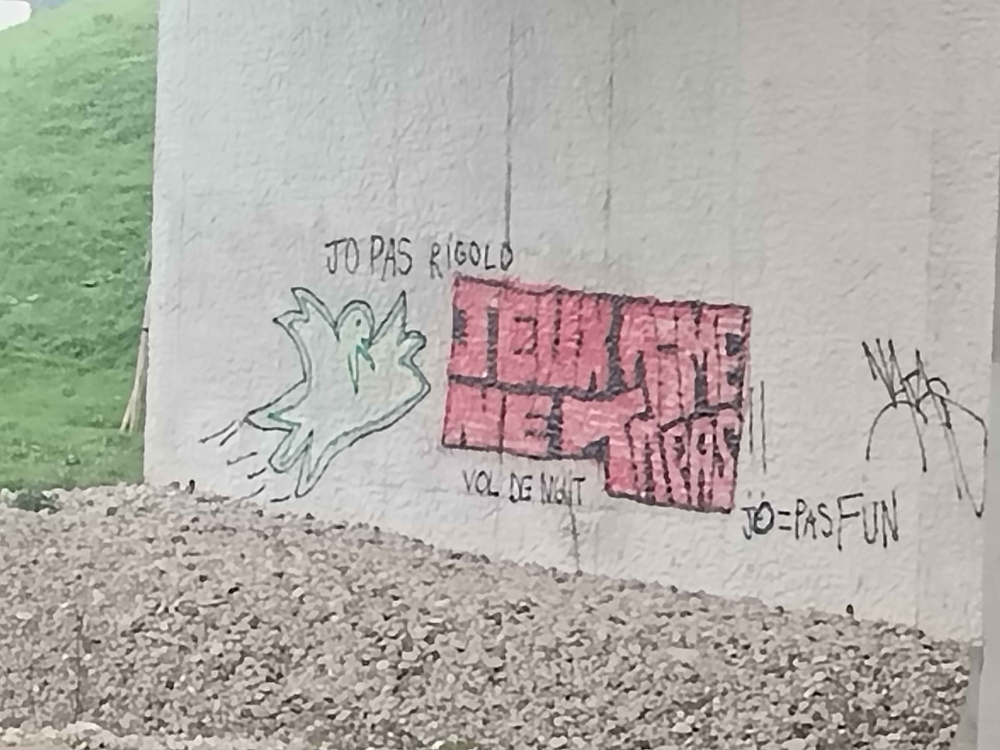

Reportage
En allant sur le terrain, nous avons pu observer les différentes infrastructures qui ont été mises en place durant les JO de Paris.
 

La ville de Saint-Denis a une forte population urbaine, on observe qu’une partie des habitations sportives des athlètes sont en cours de reconversion en bâtiment de bureau, ce qui va encourager la création et/ou l’implémentation de nouvelle entreprise. C’est aussi un moyen de relancer l’économie de manière locale. Cette rénovation permet également de réduire les coûts de production supplémentaires au niveau matériel et écologique.
 La RATP fait des efforts pour l’écologie et a donc décidé, il y a quelque temps précédant les JO, de procéder à une transition écologique. On peut voir de nombreux transports qui connaissent un changement de carburant, passant notamment de moteur à essence à des moteurs électrique ou semi-électrique réduisant ainsi drastiquement leur création de Gaz à Effet de Serre.
 On retrouve également des nouvelles infrastructures comme la Gare de Saint-Denis-Playel ainsi que de sa passerelle qui relie 2 parties de Paris séparées par l’écoulement de la Seine. Cette gare a été construite sur des anciens sites industriels et connaît de nouveau une attractivité florissante. Il y a de plus des travaux en cours pour étendre et créer de nouvelles lignes de transport.
 Malgré les futurs aménagements prévus pour les citoyens ainsi que les dispositifs mis en place pour les gêner le moins possible, Certains habitants restent mécontents des JO et ont présenté des avis défavorables à l’encontre de la présence des JO dans leur ville.